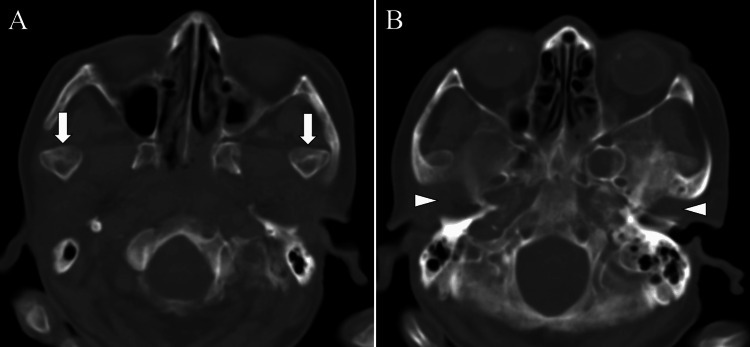
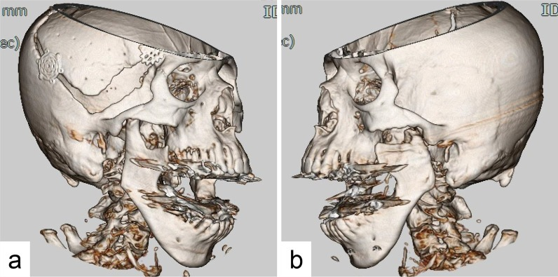
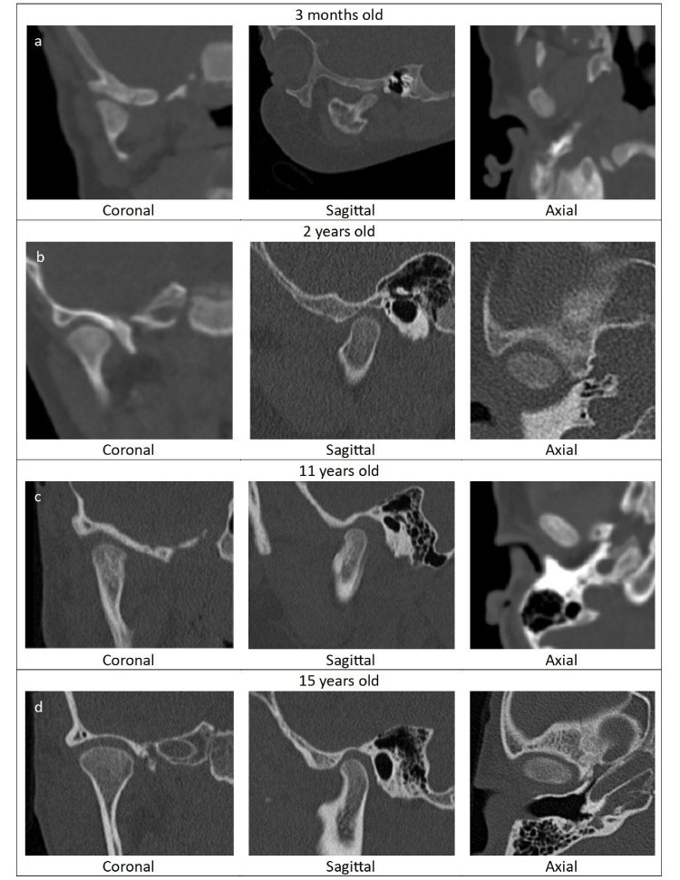
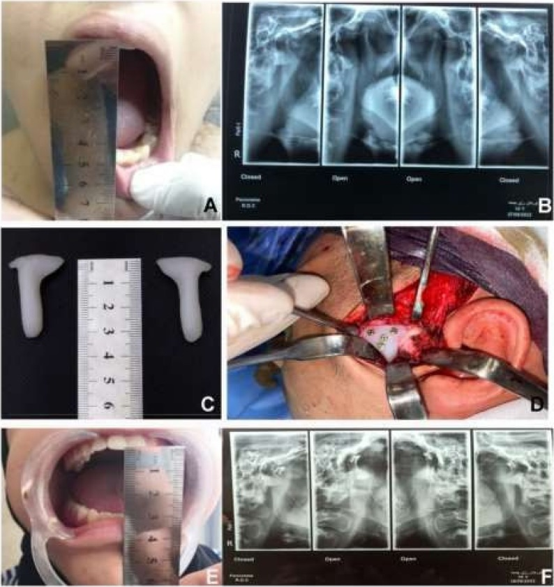

1707 — Trật khớp thái dương–hàm ở trẻ: "ổ chảo trống", lồi cầu ra trước ụ khớp, khi nào nắn kín & khi nào mổ
Tags: pattern:truot-khop pattern:o-chao-trong pattern:khong-ngam-mieng pattern:le-lech-ham vung:khop-thai-duong-ham vung:ham-duoi vung:so-mat anatomy:khop-thai-duong-ham protocol:CT-lat-mong protocol:CBCT protocol:toan-hinh score:acute-chronic-recurrent score:MIO
Mức chắc chắn (certainty): tổng hợp y văn (literature synthesis) — ghép tổng quan có hệ thống trật khớp tái diễn ở trẻ (J Clin Med 2025, PMC12609451), tổng quan 229 ca trật khớp mạn (Medicina 2025, PMC12471310), 260 ca trật khớp (Clin Oral Investig 2023, PMC10329618), 32 ca cấp cứu (Open Access Emerg Med 2018, PMC6214416), 116 ca trật khớp lên hố sọ giữa (J Clin Med 2023, PMC10253349) và 4 ca nguyên văn có ảnh (PMC11458201, PMC9219198, PMC10324983, PMC13157379). Không có ca do nhóm tự chụp; bằng chứng riêng cho trẻ rất mỏng (xem mục 5, điểm 1).
Câu hỏi thực hành: bé 26 tháng bỗng không ngậm được miệng, chảy nước bọt, không sốt, không chấn thương; hoặc bé 14 tuổi cứ há miệng ngáp là trật 3–4 lần/tháng; hoặc bà 79 tuổi nằm hồi sức sau xuất huyết não, 8 tuần không ăn được vì "không ngậm được hàm" mà không ai để ý. Câu hỏi: đây là trật khớp trước, trật khớp trên vào hố sọ, gãy lồi cầu có di lệch, hay bán trật do tăng vận động? Bài chốt ba quyết định: (1) khớp thái dương–hàm là khớp DUY NHẤT phải "soi" trên mọi CT sọ ở trẻ chấn thương và mọi CT ở bệnh nhân đột quỵ/thở máy — ổ chảo trống là dấu hiệu chốt; (2) nắn kín NGAY là điều trị đầu tay, nhưng thành công giảm mạnh sau 1 tháng (nắn kín 21,4% ở trật mạn) nên trễ chẩn đoán = phải mổ; (3) trẻ tái diễn ưu tiên điều trị bảo tồn/tiêm (botulinum, tiêm máu tự thân), mổ (cắt ụ khớp, Dautrey, ghép ụ khớp) chỉ khi thất bại — vì mổ ở trẻ có nguy cơ dính khớp và ảnh hưởng tăng trưởng.
1. Tổng quan bệnh học – cơ chế hình ảnh: vì sao lồi cầu "vượt ụ khớp" rồi không tự về
- Định nghĩa: trật khớp thái dương–hàm (temporomandibular joint dislocation/luxation) là đầu lồi cầu ra khỏi ổ chảo và không tự trở về; bán trật (subluxation) = vượt ụ khớp nhưng tự về; trật (luxation) = không tự về, phải có người nắn.
- Phân loại theo thời gian (dùng để chọn điều trị):
- Cấp (acute): < 1 tháng.
- Mạn/trật khớp tồn tại lâu (long-standing, protracted, chronic): ≥ 1 tháng không được nắn — mốc này được chọn vì phần lớn báo cáo dùng 1 tháng (Medicina 2025, PMC12471310).
- Tái diễn (recurrent/habitual): nhiều đợt, giữa các đợt khớp về vị trí bình thường — chiếm 61,9% trong 260 ca (Clin Oral Investig 2023) và 62,5% trong 32 ca cấp cứu (Open Access Emerg Med 2018).
- TẠI SAO lồi cầu ra TRƯỚC là kiểu gặp nhiều nhất: khi há miệng, lồi cầu xoay rồi trượt ra trước tới đỉnh ụ khớp; cơ chân bướm ngoài (lateral pterygoid) kéo lồi cầu ra trước, còn cơ nhai – thái dương – chân bướm trong co thắt phản xạ giữ hàm ở tư thế mở → lồi cầu mắc kẹt trước ụ khớp, không trượt ngược lại được. Đây là lý do không nắn được bằng cách bảo bệnh nhân "ngậm lại" và là lý do phải kéo hàm xuống rồi đẩy ra sau (Hippocrates/Nélaton).
- TẠI SAO thấy "ổ chảo trống" trên CT: trên lát axial ngang ổ chảo, khoang chứa lồi cầu rỗng (chỉ còn mỡ/tổ chức quanh khớp), còn lồi cầu nằm trước ụ khớp; trên coronal và 3D VR thấy rõ lồi cầu vượt qua ụ khớp. Vì không có tổn thương mô mềm – xương, không có phù tủy, không có đường gãy — hình ảnh "trống" này là dấu hiệu duy nhất, nên rất dễ bị đọc lướt.
- TẠI SAO TRẺ dễ trật hơn: ổ chảo trẻ sơ sinh nông và phẳng, lồi cầu tròn, ngắn, dây chằng – bao khớp lỏng; ổ chảo sâu dần theo tuổi (ảnh CT 3 tháng → 2 tuổi → 11 tuổi → 15 tuổi, PMC10324983). Vì vậy trẻ nhỏ có thể trật khi ăn, khóc, ngáp, nha sĩ há miệng lâu — không cần chấn thương mạnh. Tăng vận động khớp (hypermobility) gặp ở 8–39% trẻ tuổi học đường và là yếu tố nền của thể tái diễn; hội chứng Ehlers–Danlos (bất thường collagen/elastin) làm mất vững dây chằng.
- Dịch tễ – chân dung:
- Tần suất 2,5–25/100.000 người/năm; tổng quan hệ thống ghi 79 ca cấp, 35 ca mạn, 311 ca tái diễn.
- 260 ca Phần Lan (2007–2020): 61,9% tái diễn, 40,0% không rõ nguyên nhân (spontaneous), chỉ 1,9% phải mổ; có bệnh thần kinh → nguy cơ tái diễn 1,34 lần; tình trạng toàn thân kém → 1,57 lần; chụp toàn hình (panoramic) chỉ được dùng ở 21% ca.
- 32 ca Bern: tuổi trung bình 42,06, 93,7% không do chấn thương, 59,4% hai bên, 62,5% mạn/tái diễn, 31/32 điều trị bảo tồn, 38,7% cần an thần/giảm đau khi nắn.
- Trẻ em: trật khớp hiếm và phần lớn do chấn thương; thể tái diễn ở trẻ còn hiếm hơn — tổng quan 2000–2025 chỉ tìm được 9 nghiên cứu (5 ca bệnh, 3 loạt ca, 1 bệnh–chứng), tuổi 26 tháng – 17 tuổi.
- TẠI SAO trật khớp MẠN khó nắn: sau vài tuần, co thắt cơ + xơ hóa trong khớp làm lồi cầu dính vào vị trí mới; một số ca tạo khớp giả (pseudoarticulation/nearthrosis) — tổng quan 229 ca chỉ ghi nhận 6 ca. Vì vậy thời gian trật là biến số tiên lượng mạnh nhất: nắn kín khả thi ở 21,4% (49/229) so với 76,4% (175/229) phải mổ mở, và nhóm nắn kín có thời gian trật 4,9 tháng so với 14,8 tháng ở nhóm mổ (p = 0,001).
- Thể đặc biệt – trật khớp LÊN hố sọ giữa (superior/central dislocation): lồi cầu xuyên qua trần ổ chảo vào hố sọ giữa, thường sau chấn thương cằm hướng lên trên–ra sau; 116 ca/104 bài: 80% ca xuyên hoàn toàn phải mổ mở, sau 22 ngày 100% phải mổ mở; nam phải mổ mở nhiều hơn OR 4,959 (1,208–20,365).
- Sinh lý bệnh của biến chứng: trật khớp lâu → co rút cơ nhai, xơ hóa, giảm dinh dưỡng sụn, về lâu có thể dính khớp (bài 1703) — đây là lý do không được "chờ xem" ở trẻ.
2. Mẫu hình + chẩn đoán phân biệt theo vị trí và cơ chế (Gamut)
- Ba câu hỏi định khu (hỏi trước khi nhìn chẩn đoán):
- Lồi cầu ở đâu? — trước ụ khớp (trước), trong hố sọ giữa (trên), trong ống tai ngoài (sau), lệch bên/trong (thường kèm gãy).
- Có đường gãy lồi cầu/ổ chảo không? — quyết định "trật khớp đơn thuần" hay "gãy–trật".
- Bao lâu rồi? — < 1 tháng (cấp) vs ≥ 1 tháng (mạn) vs tái diễn.
- Gamut theo hướng di lệch:
- Ra trước (anterior) — > 90%: há miệng quá mức (ngáp, nha khoa, nội soi, đặt nội khí quản), động kinh, loạn trương lực cơ do thuốc; một bên → lệch hàm sang bên đối diện, hai bên → cằm ra trước, cắn hở trước, không ngậm được.
- Lên trên vào hố sọ giữa (superior/central): chấn thương cằm mạnh; nguy cơ rách màng não, rò dịch não tủy, máu tụ nội sọ, tổn thương dây VII.
- Ra sau (posterior): vào ống tai ngoài, thường kèm gãy ống tai/xương thái dương.
- Sang bên/ra trong (lateral/medial): gần như luôn kèm gãy lồi cầu hoặc gãy cành lên.
- Gamut theo nguyên nhân ở trẻ:
- Chấn thương (hay nhất ở trẻ em): té cằm, tai nạn xe, va chạm khi chơi.
- Động kinh/co giật và loạn trương lực cơ cấp do thuốc (metoclopramide, thuốc chống loạn thần, chống nôn): há miệng không kiểm soát.
- Tăng vận động/dẻo khớp, Ehlers–Danlos, hội chứng Down: thể tái diễn.
- Y sinh (iatrogenic): nha khoa, nội soi tiêu hóa, đặt nội khí quản kéo dài, thở máy (bệnh nhân không thể báo đau/không ngậm được).
- Bẩm sinh/sơ sinh: ổ chảo phẳng, dây chằng lỏng — tiếng "click" khi bú, hàm lệch, tự khỏi trong 1 tháng (ca 6 ngày tuổi, PMC10324983).
- Gamut theo hình ảnh trên CT sọ (khi không nghĩ tới khớp):
- Ổ chảo trống + lồi cầu trước ụ khớp → trật khớp trước.
- Lồi cầu trong hố sọ giữa + mảnh xương trần ổ chảo → trật khớp trên.
- Lồi cầu lệch trong + đường gãy cổ lồi cầu → gãy–trật (bài 1708).
- Khoảng khớp rộng bất thường hai bên, không di lệch → bán trật/tăng vận động, không phải trật.
- Mnemonic "3 Đ": Đầu lồi cầu ở đâu (vị trí), Đường gãy (có/không), Độ dài thời gian (cấp/mạn/tái diễn).
3. Bảng so sánh phân biệt (ma trận đối chiếu)
| Thực thể (entity) | Hình ảnh điển hình | Chốt vào (rule-in) | Chốt loại (rule-out) | Gợi ý xác nhận |
|---|---|---|---|---|
| Trật khớp trước cấp (anterior acute luxation) | Lồi cầu trước ụ khớp, ổ chảo trống, không đường gãy, không phù tủy | Không ngậm được miệng + cắn hở trước + ổ chảo trống trên CT/OPG | Có đường gãy cổ lồi cầu → gãy–trật, không phải trật đơn thuần | Nắn kín tại giường; X-quang/CT sau nắn để xác nhận |
| Trật khớp mạn (≥ 1 tháng) | Lồi cầu xa ụ khớp, xơ/co rút, có thể khớp giả; MIO không đo được vì không ngậm được | Thời gian ≥ 1 tháng + nắn kín thất bại | Cầu xương lồi cầu–ổ chảo → dính khớp (bài 1703), không phải trật | CT 3D + MRI đĩa khớp; thử nắn dưới gây mê |
| Trật khớp tái diễn (recurrent/habitual) | Giữa các đợt khớp bình thường; đợt trật cùng một hướng; ụ khớp thấp/dốc | ≥ 2–3 đợt/6 tháng, tự nắn được hoặc nắn dễ | Bán trật (subluxation) tự về → không phải luxation, chỉ theo dõi | Đo MIO, phim há–ngậm miệng, MRI đĩa khớp |
| Trật khớp trên vào hố sọ giữa (superior) | Lồi cầu trong hố sọ giữa, vỡ trần ổ chảo, khí/máu nội sọ | Chấn thương cằm + lồi cầu trên mức trần ổ chảo trên coronal/3D | Chỉ gãy trần ổ chảo mà lồi cầu còn dưới → gãy xương thái dương | CT sọ lát mỏng + mạch máu não (CTA) nếu có máu tụ |
| Gãy–trật lồi cầu (fracture-dislocation) | Đường gãy cổ/đầu lồi cầu + mảnh lồi cầu lệch trong/ra trước, mất chiều cao cành lên | Đường gãy rõ + mảnh lồi cầu ra khỏi ổ chảo | Không đường gãy, chỉ lồi cầu ra trước → trật đơn thuần | CT đa bình diện (bài 1708), đo chiều cao cành lên |
| Trật khớp do loạn trương lực cơ (dystonia) | Trật hai bên, tái diễn, kèm vẹo cổ, co giật cơ mặt, dùng thuốc an thần/chống nôn | Tiền sử thuốc + trật hai bên + không đau kiểu chấn thương | Trật do chấn thương đơn thuần (không có yếu tố thuốc) | Ngừng thuốc, hội chẩn thần kinh; nắn + theo dõi |
| Bán trật do tăng vận động (subluxation) | Lồi cầu vượt ụ khớp khi há tối đa nhưng tự về, ổ chảo không trống khi ngậm | Há miệng > 40 mm, "lắc" khớp, tự nắn | Không tự về → trật thật, cần nắn | Phim há/ngậm, MRI; điều trị bảo tồn – bài tập |
4. Protocol chụp + cách nắn & hệ phân độ
- Bước 1 — lâm sàng trước, phim sau: đo MIO (maximal interincisal opening, mm), ghi cắn hở trước, lệch cằm, khả năng ngậm miệng, dấu chảy nước bọt/khó nói; hỏi thuốc (chống nôn, chống loạn thần), động kinh, chấn thương, số đợt trước.
- Bước 2 — khi nào chụp: trật điển hình nắn được ngay thì không bắt buộc chụp (chỉ 21% ca được chụp toàn hình trong loạt 260 ca; 51,8% nhóm tái diễn có chụp). Bắt buộc chụp khi: chấn thương, nắn thất bại, trật mạn, nghi trật trên, trẻ không hợp tác/không rõ cơ chế, trước mổ.
- Bước 3 — chọn modality:
- Toàn hình (panoramic/OPG): rẻ, thấy lồi cầu trước ụ khớp khi há; hạn chế: chồng hình, không đánh giá nội khớp và trần ổ chảo, không đo được di lệch chính xác.
- CT/CBCT (chọn lựa khi cần quyết định): axial + coronal + 3D VR, lát ≤ 1 mm; trả lời 4 câu: lồi cầu ở đâu, ụ khớp còn nguyên không, có đường gãy không, trần ổ chảo có vỡ không. Với trẻ: trường chiếu nhỏ, liều thấp, tránh chụp lặp.
- MRI: không dùng để chẩn đoán trật cấp, nhưng cần khi trật mạn/tái diễn (đĩa khớp, tràn dịch, bao khớp) và trước mổ — quyết định cắt ụ khớp/ghép ụ khớp hay chỉ can thiệp đĩa.
- Bước 4 — nắn (thuật toán):
- Hippocrates/Nélaton: hai ngón cái đặt trên răng hàm dưới hai bên, các ngón còn lại dưới cằm; ấn xuống rồi đẩy ra sau–lên. Có thể dùng wrist pivot, gag reflex, kỹ thuật ngoài miệng.
- Thất bại/lần 2: an thần – giảm đau (N₂O, midazolam, propofol, ketofol); 38,7% ca trong loạt 32 ca cần analgosedation.
- Vẫn thất bại: nắn dưới gây mê + giãn cơ — ca 79 tuổi sau đột quỵ nắn kín thành công dưới gây mê sau khi nắn thường thất bại (PMC11458201).
- Mạn ≥ 1 tháng: thử nắn kín dưới gây mê trước (21,4% thành công); nếu thất bại → mổ mở (76,4%): treo móc mỏm vẹt 18,8%, cắt lồi cầu 10,9%, tạo hình ụ khớp 8,7%, cắt ụ khớp 8,3%, cắt đĩa 4,4%, phẫu thuật chỉnh hàm 4,4%.
- Tái diễn: bảo tồn (bài tập, máng, hạn chế há) → botulinum toxin A vào cơ chân bướm ngoài (phương pháp xâm lấn tối thiểu hay dùng nhất ở trẻ) → tiêm máu tự thân/arthrocentesis → mổ (Dautrey, cắt ụ khớp, ghép ụ khớp in 3D). Ở loạt trẻ: tiêm máu tự thân 33–36 tháng không tái phát, Dautrey 28–36 tháng, botulinum lặp lại 9 tháng, cắt ụ khớp sau thất bại 6 tháng không tái phát.
- Phân độ thời gian (dùng trong bài này, không phải RADS):
flowchart TD
A[Không ngậm được miệng] --> B{Nắn kín được ngay?}
B -->|Có| C[Trật cấp - theo dõi, hạn chế há]
B -->|Không| D{Thời gian >= 1 tháng?}
D -->|Không| E[An thần / gây mê + giãn cơ]
E -->|Thành công| F[Theo dõi + physiotherapy]
E -->|Thất bại| G[CT/CBCT: gãy? trật trên?]
D -->|Có| H[CT 3D + MRI đĩa khớp]
H --> I{Nắn kín dưới gây mê?}
I -->|Có 21,4%| F
I -->|Không| J[Mổ mở 76,4%: cắt lồi cầu / tạo hình ụ khớp]
G -->|Trật trên| K[CT sọ + CTA - mổ lấy lồi cầu]
G -->|Gãy-trật| L[Bài 1708 - ORIF hay bảo tồn]
- Sau nắn: mềm/dinh dưỡng lỏng 1–2 tuần, không há tối đa, giảm đau, physiotherapy sớm (tránh co rút), hẹn 1–2 tuần và 1 tháng; ở trẻ đang lớn: theo dõi tăng trưởng hàm tới khi trưởng thành.
- Bằng chứng ngoại suy cho thể tái diễn khó: 11 bệnh nhân > 16 tuổi ghép ụ khớp nhân tạo in 3D: MIO giảm có kiểm soát, đau VAS 8,80 → 6,29 sau 6 tháng, 18,2% nhiễm trùng phải lấy implant — dùng để giải thích biến chứng của mổ, không để chỉ định ở trẻ nhỏ (PMC13157379).
5. Biến thể bình thường và cạm bẫy
- Bẫy 1 — "ổ chảo trống" do lát cắt sai: lát axial trên ổ chảo cũng "trống". Cách tránh: lần theo lồi cầu từ thân hàm lên trên coronal/3D, và xác định ụ khớp cùng lát; ổ chảo trống thật phải đi kèm lồi cầu nằm trước ụ khớp.
- Bẫy 2 — gãy lồi cầu bị đọc thành "trật khớp": trong ca trật khớp hai bên mạn, CT còn cho thấy gãy mỏm lồi cầu bên trái (PMC9219198) — nếu chỉ thấy "lồi cầu ra trước" mà bỏ đường gãy, kế hoạch điều trị sai (cắt lồi cầu thay vì nắn/cố định). Luôn cuộn hết lồi cầu ở cả hai bên.
- Bẫy 3 — trật khớp trên bị nhầm là chấn thương sọ: lồi cầu trong hố sọ giữa dễ bị đọc là "mảnh xương lạc"; hỏi thêm chảy máu tai, rò dịch não tủy, liệt VII, và mổ mở là bắt buộc sau 22 ngày (116 ca).
- Bẫy 4 — trẻ sơ sinh "click" khi bú: ổ chảo phẳng sinh lý + dây chằng lỏng → tiếng click, lệch hàm khi há, tự hết trong 1 tháng (ca 6 ngày tuổi). Không gắn nhãn dính khớp/loạn sản khi CT chưa có cầu xương; theo dõi + khám lại.
- Bẫy 5 — bệnh nhân không "kêu" được: đột quỵ, hôn mê, đặt nội khí quản, sa sút trí tuệ — biểu hiện chỉ là không ăn được, chảy nước bọt, sốt do sặc; ca 79 tuổi bị 8 tuần mới chẩn đoán. Trên mọi CT sọ của nhóm này, phải nhìn ổ chảo hai bên.
- Bẫy 6 — từ ngữ phân loại: tiếng Anh "dislocated" = ra khỏi khớp (exarticulation), còn tiếng Đức "disloziert" = di lệch (displaced); đọc phân loại Loukota/Neff mà không để ý ngôn ngữ sẽ xếp sai độ nặng (bài 1708).
- Bẫy 7 — bỏ sót "satisfaction of search": trẻ té cằm có gãy xương hàm rõ → dừng lại ở đó và bỏ trật khớp thái dương–hàm cùng bên. Trong chấn thương hàm, luôn kiểm tra khớp TMJ hai bên như một phần của đọc CT sọ–mặt.
6. Tự lượng giá — Blind Quiz
Ca 1 — Bà 79 tuổi, xuất huyết não phải, mở khí quản, 8 tuần chỉ nuốt được qua sonde. Nhìn CT sọ, mô tả trước khi đọc đáp án.

- Gợi ý lâm sàng: không đau hàm, không chấn thương; điều dưỡng ghi "không ngậm được miệng" nhưng bị cho là di chứng đột quỵ.
- Câu hỏi: Dấu hiệu chính ở hai ổ chảo là gì? Lồi cầu nằm ở đâu? Vì sao không nghĩ tới gãy xương? Ba chẩn đoán phân biệt?
Bấm để hiện đáp án
- Dấu hiệu (findings): A — hai ổ chảo trống (mũi tên trắng), không thấy lồi cầu trong ổ; B — hai lồi cầu nằm trước ụ khớp (đầu mũi tên).
- Chẩn đoán (diagnosis): trật khớp thái dương–hàm trước, hai bên, mạn (8 tuần). Vì sao: không có đường gãy, không phù tủy, không mảnh xương → trật đơn thuần; thời gian 8 tuần giải thích vì sao nắn thường thất bại (thử nắn thường thất bại, phải nắn kín dưới gây mê + giãn cơ).
- Phân biệt: gãy–trật lồi cầu (sẽ có đường gãy + mất chiều cao cành lên), dính khớp (cầu xương, MIO hạn chế chứ không phải "không ngậm được"), trật khớp trên (lồi cầu trong hố sọ giữa).
- Nguồn ảnh: Cureus 2024 (PMC11458201), CC BY 4.0 — ca nguyên văn, ảnh nguyên bản.
Ca 2 — Người lớn trẻ, miệng há không ngậm được nhiều tháng; CT 3D hai bên.

- Gợi ý lâm sàng: cằm ra trước, không cắn được, đã từng mổ sọ bên phải.
- Câu hỏi: Hai lồi cầu nằm ở đâu so với ụ khớp? Có gì bất thường ở lồi cầu bên trái? Điều đó thay đổi kế hoạch mổ thế nào?
Bấm để hiện đáp án
- Dấu hiệu (findings): cả hai lồi cầu vượt qua ụ khớp (a: bên phải, b: bên trái); bên trái còn đường gãy mỏm lồi cầu phía trong.
- Chẩn đoán (diagnosis): trật khớp hai bên mạn + gãy mỏm lồi cầu trái. Vì đã mạn và có mảnh gãy, nhóm tác giả chọn cắt lồi cầu trong miệng thay vì nắn đơn thuần.
- Bài học: trật khớp và gãy lồi cầu có thể cùng tồn tại; đọc 3D phải xoay đủ góc và theo dõi mỏm lồi cầu, không chỉ nhìn vị trí.
- Nguồn ảnh: J Med Case Rep 2022 (PMC9219198), CC BY 4.0 — ảnh nguyên bản.
Ca 3 — Bốn em bé 3 tháng, 2 tuổi, 11 tuổi, 15 tuổi: cùng một khớp, bốn hình dạng.

- Câu hỏi: Ổ chảo thay đổi thế nào theo tuổi? Vì sao trẻ nhỏ dễ trật hơn? Đâu là "giới hạn bình thường" của trẻ 3 tháng?
Bấm để hiện đáp án
- Dấu hiệu (findings): 3 tháng — ổ chảo rất phẳng, nông, lồi cầu tròn; 2 tuổi — ổ chảo bắt đầu lõm; 11 tuổi — ổ chảo sâu, lồi cầu dài; 15 tuổi — gần giống người lớn, ụ khớp rõ.
- Chẩn đoán/ý nghĩa: đây là quá trình sâu hóa ổ chảo theo tuổi, không phải bệnh. Vì ổ chảo nông + dây chằng lỏng, trẻ nhỏ trật khớp với lực rất nhỏ (bú, khóc, ngáp); "click" ở trẻ sơ sinh thường tự hết trong 1 tháng (ca 6 ngày tuổi trong bài gốc).
- Cạm bẫy: gọi "loạn sản lồi cầu" khi thấy ổ chảo phẳng ở trẻ < 6 tháng là overcall — cần đối chiếu tuổi và theo dõi.
- Nguồn ảnh: Cureus 2023 (PMC10324983), CC BY 4.0 — ảnh nguyên bản.
Ca 4 — Trẻ lớn, trật khớp tái diễn nhiều năm; phim há–ngậm trước và sau đặt implant ụ khớp.

- Gợi ý: đã thất bại bảo tồn và tiêm; MIO trước mổ rất lớn.
- Câu hỏi: Trên phim há miệng, lồi cầu đi tới đâu? Sau can thiệp, vì sao MIO giảm lại là mục tiêu? Hai biến chứng cần nói trước với gia đình?
Bấm để hiện đáp án
- Dấu hiệu (findings): B (trước mổ) — khi há, lồi cầu vượt hẳn ụ khớp (không còn tiếp xúc ổ chảo); F (sau mổ) — lồi cầu dừng trước ụ khớp, khớp còn khoảng trống.
- Chẩn đoán (diagnosis): trật khớp tái diễn do tăng vận động, điều trị bằng ghép ụ khớp (augmentation eminoplasty) để tạo "chốt" cơ học — vì vậy MIO giảm có chủ đích, đổi lại hết trật.
- Số liệu: 11 ca > 16 tuổi, đau 8,80 → 6,29/10, 18,2% nhiễm trùng phải lấy implant, không tái phát trong 6 tháng theo dõi (ngắn).
- Nguồn ảnh: Maxillofac Plast Reconstr Surg 2026 (PMC13157379), CC BY 4.0 — ảnh nguyên bản (gồm ảnh lâm sàng mở miệng của bài gốc).
Bài liên quan chéo
- 1703 – Dính khớp thái dương–hàm bẩm sinh ở trẻ
- 1708 – Gãy lồi cầu xương hàm dưới ở trẻ
- 1706 – Túi thừa bàng quang ở trẻ (bẫy "bàng quang Mickey Mouse" — cùng nhóm bẫy hình học trên mặt cắt)
- 600 – Tổng quan Hệ Nhi khoa
Ảnh
- 5 ảnh, tất cả CC BY 4.0: Cureus 2024 (PMC11458201) 2 ảnh; J Med Case Rep 2022 (PMC9219198) 1; Cureus 2023 (PMC10324983) 1; Maxillofac Plast Reconstr Surg 2026 (PMC13157379) 1 — nguyên bản, không crop/ghép.
- Không tạo composite: các bài gốc khác bệnh cảnh (đột quỵ, trật mạn hai bên, giải phẫu theo tuổi, can thiệp ụ khớp) nên ghép sẽ gây hiểu sai "cùng một ca".
- Ảnh của Int J Surg Case Rep 2026 (PMC13166655) có hình OPG + 3D + MRI rất đẹp nhưng CC BY-NC-ND → chỉ dẫn link trong
sources.md.
Không dùng để chẩn đoán độc lập khi chưa có người hướng dẫn.